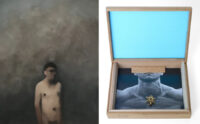

Closing Reception for Grey James and Wallace Bowling
Grey James’ latest works are concerned with his personal experience as a trans man, having experienced significant harassment and defamation. These works have become supercharged with emotion and defiance in response to being targeted by anti-trans individuals. PJOB is an acronym for “Pink Jerkoff Boy,” the title of a painting sold in 2017 that was